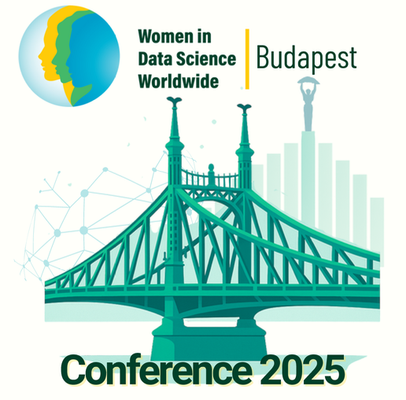
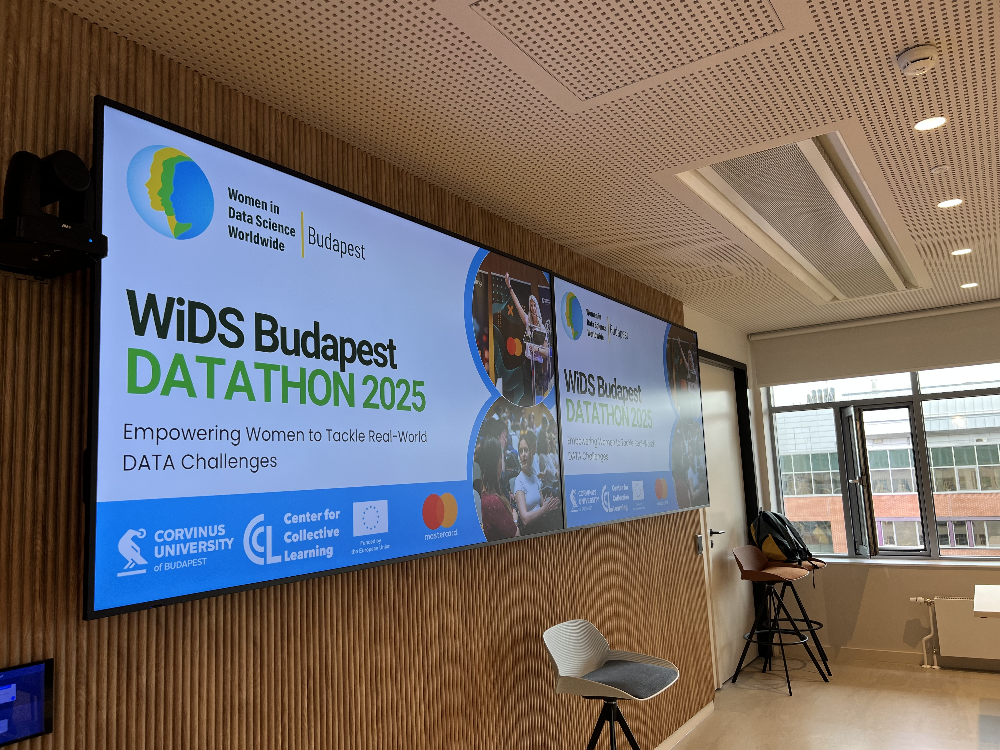
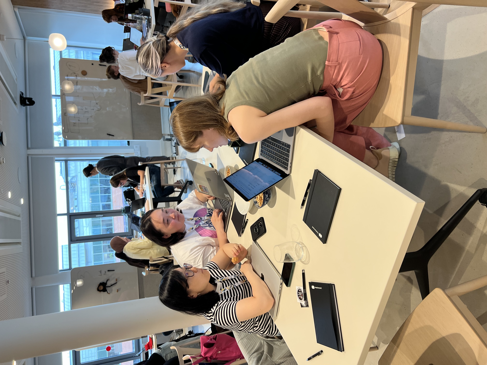
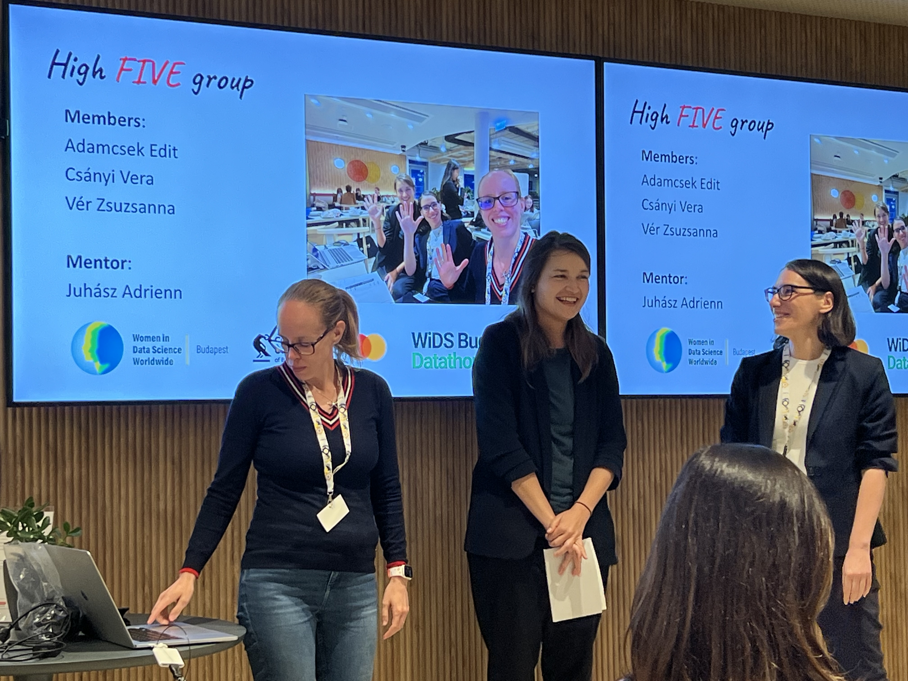
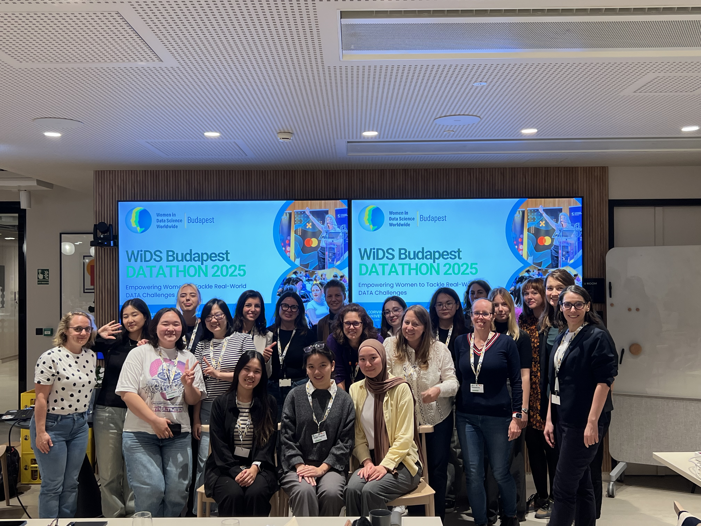
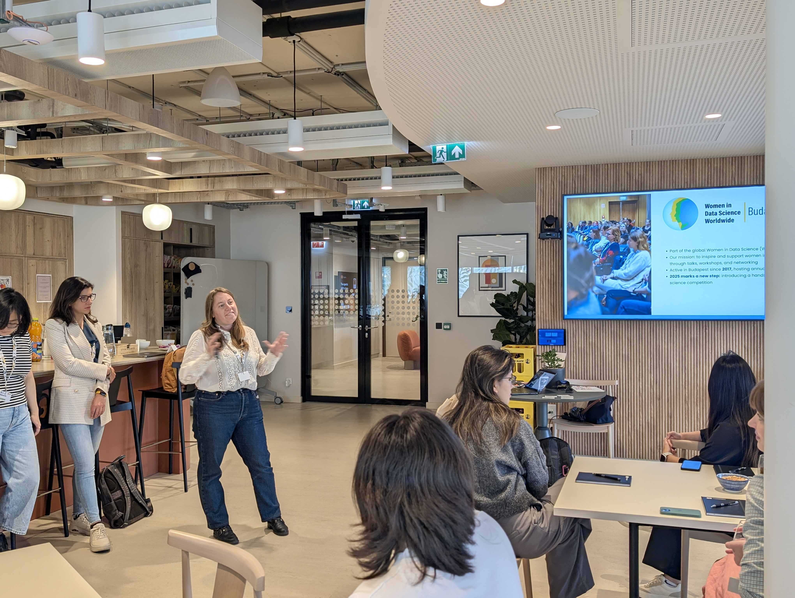
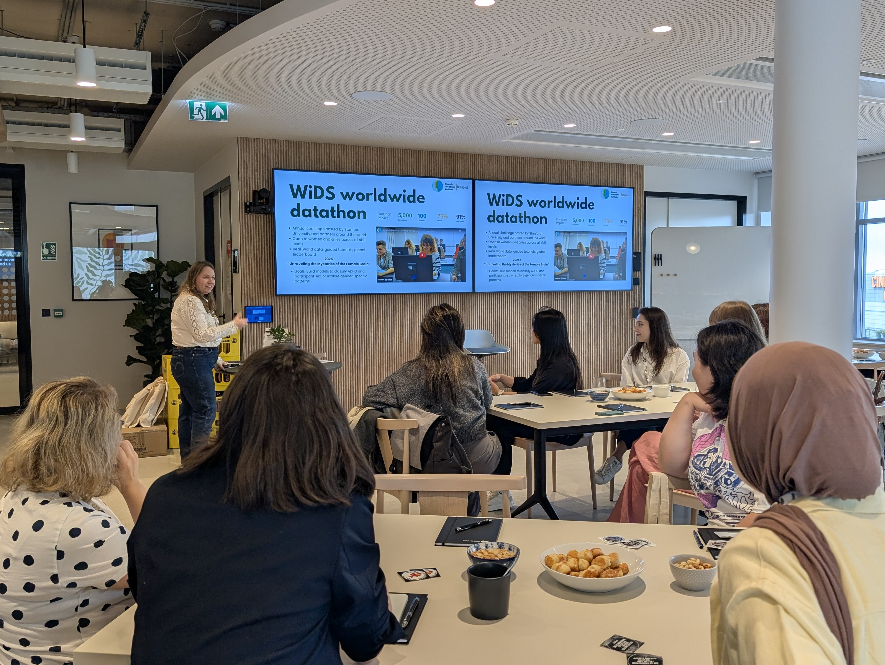
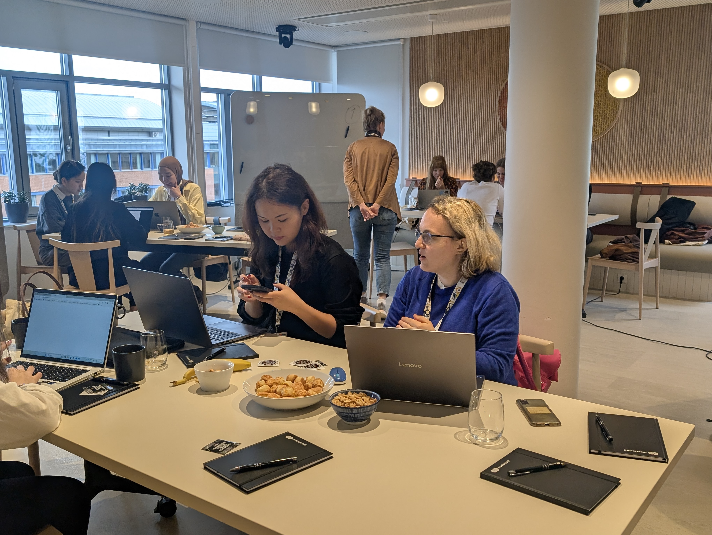
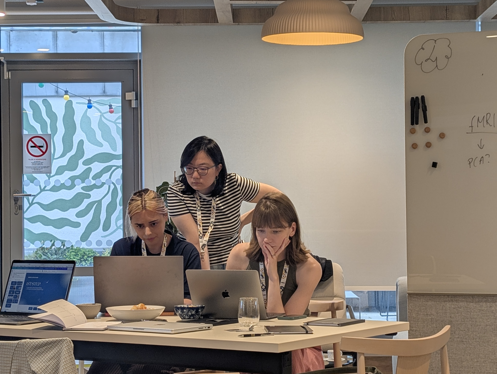
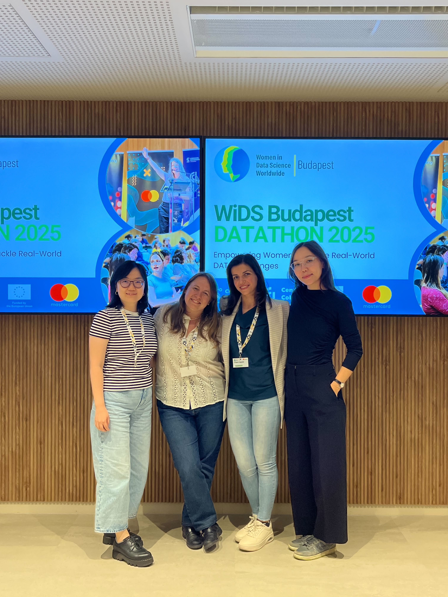

WiDS Budapest Datathon · Budapest, Hungary
Organizing Committee and Datathon Lead
Abstract
Organizing Committee member and Datathon Lead for the first WiDS Budapest Datathon, helping shape the challenge, coordinate mentors, and create a welcoming day of data work.
Date
September 26, 2025
Location
Budapest, Hungary
Event
Women in Data Science (WiDS) Budapest
WiDS Budapest is one of the events I most wanted to document carefully because I was not only attending it, I was helping build it.
In 2025 I served on the organizing committee and led the datathon for the first WiDS Budapest Datathon, conceived as a local spinoff of the global WiDS Datathon. My role covered the parts of an event that usually disappear behind a short CV line: shaping the challenge, coordinating mentors, preparing materials, thinking through the participant experience, and helping the day run in a way that felt both technically serious and genuinely welcoming.
WiDS Worldwide describes its datathons as spaces where participants can learn, apply, and strengthen their data science skills through social-impact challenges. In Budapest, that broader mission took a local form. This first edition was organized by WiDS Budapest, Corvinus University, and Mastercard, and hosted at Mastercard Offices, Vaci ut 26, Budapest on Friday, September 26, 2025, from 1:00 to 8:00 pm.
What made the event especially exciting was the challenge itself: applying AI to neuroscience and mental health data in order to study the female brain. The call was intentionally broad and welcoming. Participants could register individually or in teams of up to three, no previous experience was required, and mentors were there throughout the event to provide feedback and support. The event especially welcomed participants who identify as women and framed the day as a space to learn, collaborate, and grow.
What I am especially proud of is that the event brought together several things I care about at once: data science as a practical craft, mentoring as real support rather than branding, and community-building as part of the work itself. For me, this was not just another item on the calendar. It was a concrete example of the kind of public-facing data work I want to keep doing.
Official Highlights
There is also an official highlights video for the event, published on YouTube by WiDS Worldwide, and I wanted to keep it here as the first audiovisual record of the datathon.
The Call
The public invitation captured the spirit of the event very well: a first-ever WiDS Budapest Datathon, connected to the wider WiDS community, but grounded in a local organizing effort. It invited people to bring their laptops and curiosity, work in small teams, and build skills in a supportive environment while connecting with a broader network of women in data science.
It also mattered that the event had a clear structure and ambition. Applications closed on September 18, 2025, the day included awards designed to recognize participants and help kick-start careers in data science, and the overall tone of the event was not just competitive but developmental.
Before The Event

Before the event itself, there was a lot of invisible work behind the scenes: defining what the datathon should feel like, making sure the challenge was accessible but meaningful, coordinating people, and turning an idea into something participants could actually inhabit for a day. I wanted to keep these materials here because they are part of the story too, not just decoration around the event.
The Day Itself










Looking back at these images, what stands out to me is not only the scale of the event but its atmosphere. It felt collaborative, focused, and open. That is exactly why I want to document events like this more deliberately on the website: they show the kind of work I do that lives somewhere between research, teaching, mentorship, and community-building.